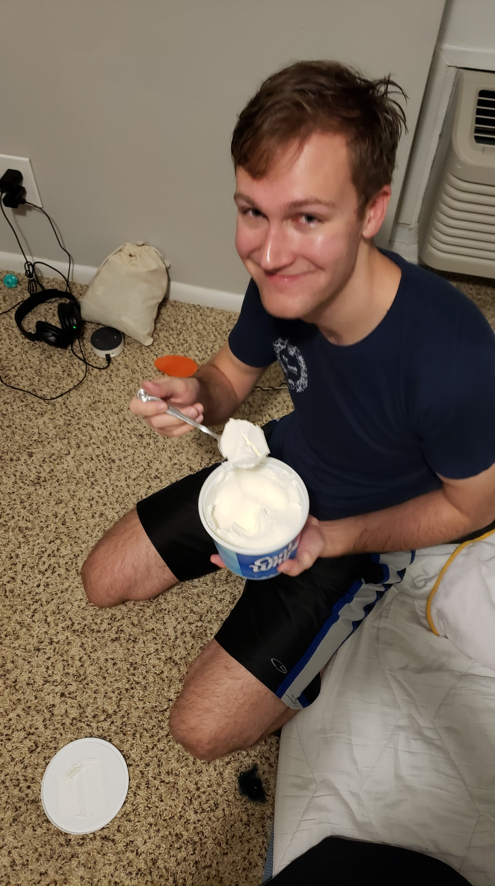
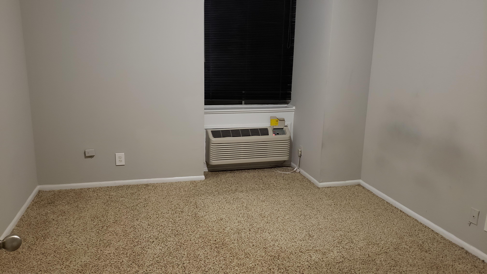
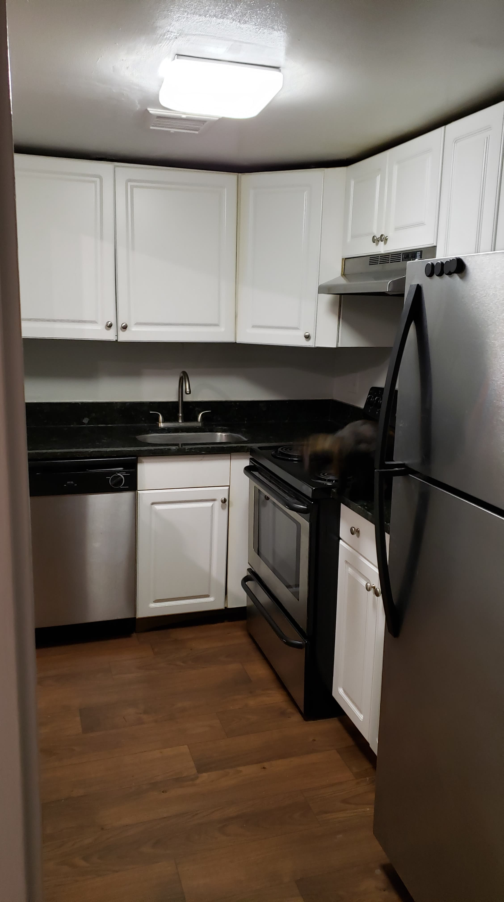
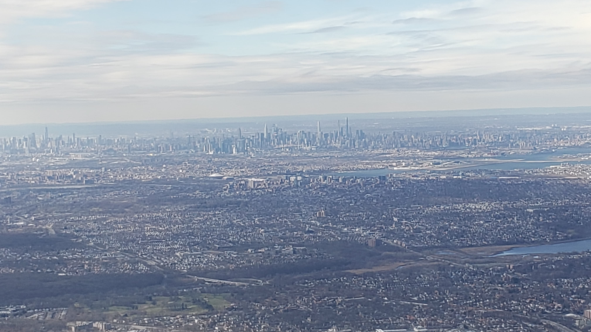
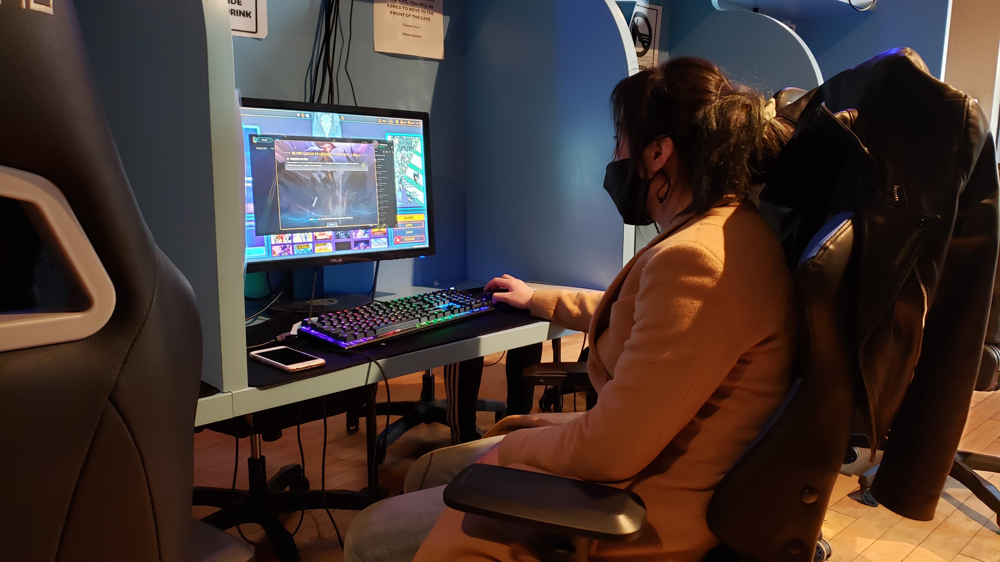

Today was the day! The day of the big move to New York City! Ailin and I woke up early at 4AM to finish packing. After a healthy breakfast of Cool Whip. We successfully stuffed everything into three suitcases, one box, and carry-on two bags. And with everything ready to go and the apartment clean, we put Licky in her bag and got a Lyft to the airport.
  At the airport I immediately checked my luggage, then met up with Ailin who needed to wait in a longer line to register Licky. Once we got to the front of the line, we found out the Ailin's checked bag was over 50lbs! If I hadn't already checked my bags, we could have swapped it out because as a gold medallion member, I get no charge for heavy bags. So, that's a lesson for next time. Everything was fine though. We moved a few things and the bag was light enough.
Though, the trouble with the bag and a slow-moving security line meant that we missed our flight by just a hair. But, with the help of the Delta staff, we were able to get on the next flight with only a $150 upcharge for Ailin's ticket (my ticket was free due to my medallion status). With the stresses of the airport behind us, we boarded the plane and headed off.
The trip was relaxing and Licky took it like a champ. I even got a great view of New York flying in!
After picking up our checked bags that had arrived on an earlier flight, we took a Lyft to our apartment. The real estate agent, Randy, wasn't there yet, so we chilled at the gaming cafe under our apartment until he arrived. Ailin taught me how to play League of Legends, and I won a match! That match may have been against the tutorial, but I still consider it an accomplishment.
We found out our apartment was on the 4th floor despite the fact that we both think Randy said it was on the second. Something like this has happened before when Randly claimed there was no pet deposit when there was. At this point, I was feeling a bit annoyed. I was as friendly to Randy as I could be, but I was tired and hungry having only eaten cool whip and a pretzel I bought while waiting for a plane.
We let Licky out and departed for a nearby Target to buy toiletries and cat supplies. On the way back, we stopped by a place called "The Pickle Guys." I thought it was a sandwich shop where I could finally get lunch, but it was actually a store that just sold pickled things. The guy attending it was extremely friendly and informed us that there is a companion store that sells full meals, but that it wasn't open at the moment. We'll certainly go back when it is open, but for now I got a sandwich from Subway and felt much better with a full stomach.
Licky probably felt the same. At first, we were scared that she would have a hard time adjusting to the apartment, but once we got her food, water and litter set up, she was back to her normal self.
We ended the day by going down a few blocks to Chinatown for "Wah Fung No 1," a fast food restaurant with very high reviews on Yelp. The food may have been fast, but there was a massive line out the door. While we waited, I went nextdoor to KungFu Tea to get some Boba.
We went back to the apartment, ate, and fell right to sleep ending a huge day.